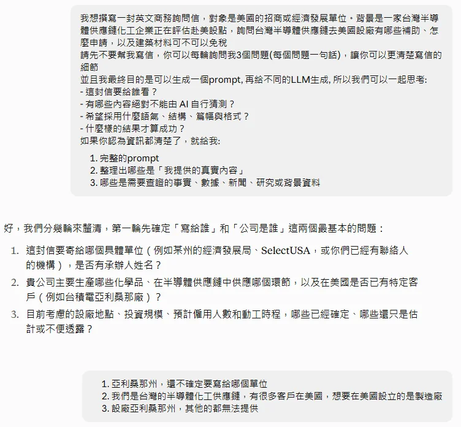
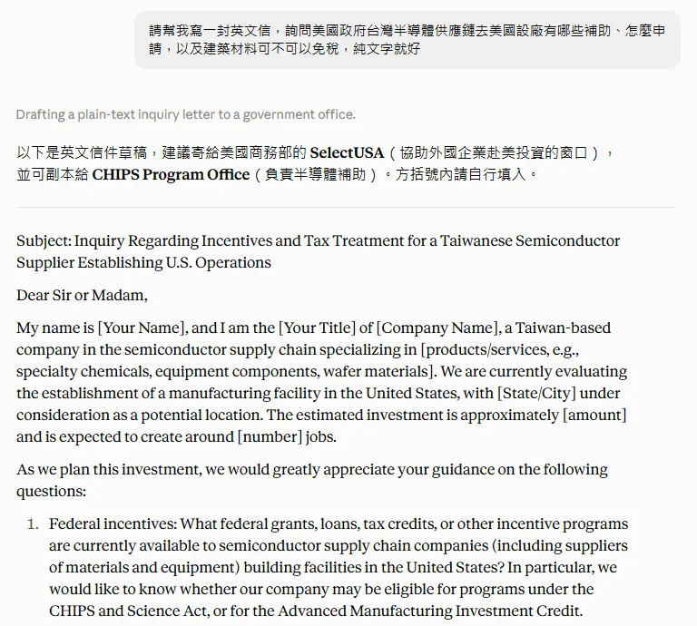
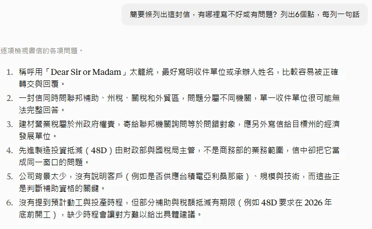
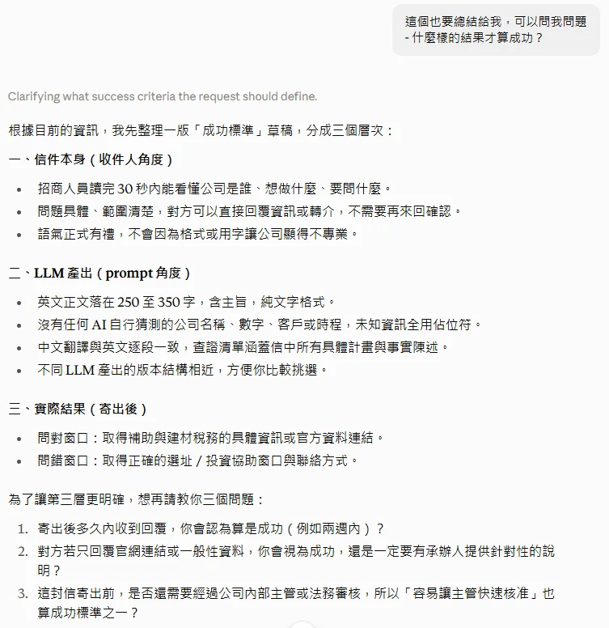
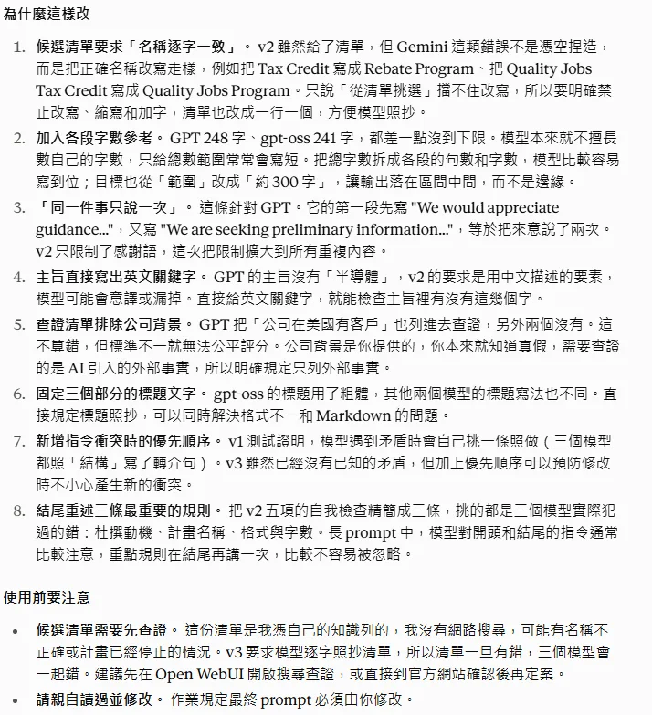

和 AI 一起設計真正好用的 Prompt
Prompt 就是我們給 AI 的指令。這次我挑了一個工作上真的會遇到的任務：替台灣半導體供應鏈的化工企業，寫一封英文信給美國亞利桑那州的招商單位，詢問設廠補助和建材稅務。目標是設計一份交給哪個 AI 都能寫出正式、不亂編資訊的信的 Prompt。

想解決的問題
AI 寫的信看起來很專業，但裡面提到的補助計畫可能過時或根本不存在，寄出去就糗了。
AI 怎麼幫忙
Claude 陪我把一句話的指令問到完整，還幫忙列出要查證的事和評分表；再用公司內部的 AI 平台找三個不同的 AI 來測。
成果
改版後三個 AI 的分數都進步：GPT 95 → 98、gpt-oss 88 → 90、Gemini 95 → 96。
01過程
-
憑直覺寫一句話，再請 AI 自己挑毛病
一開始我只說「請幫我寫一封英文信，詢問美國政府台灣半導體供應鏈去美國設廠有哪些補助、怎麼申請，以及建築材料可不可以免稅，純文字就好」。AI 給的初稿看起來已經可以用了。
接著我請 Claude 站在收件人角度挑毛病。它挑的很多問題，其實是因為我沒給它資訊（而且很多資訊本來就不能給）。對我來說真正的問題是：
- 信裡提到的補助計畫是 AI 自己挑的，我沒辦法判斷對不對、有沒有過時
- 信太長，很難一眼看出要做什麼，不像對方會想回的 email

一句話 Prompt 寫出的初稿 
請 Claude 自己挑毛病 -
先別動筆，讓 AI 問我
我請 Claude 先不要寫，每輪只問三個問題、每題一句話（不限制的話它會一直問）。三輪之後確定了這些事：
給誰看 亞利桑那州的招商或經濟發展單位，具體單位還沒確定 不能讓 AI 猜的 公司名稱、寄件人、投資金額、僱用人數、時程、產品和客戶名稱，一律不准出現 語氣篇幅 正式但簡短，250 到 350 字，純文字，附中文對照翻譯 信件目的 問對窗口，就請對方提供補助和稅務資訊；問錯窗口，就請對方轉介正確的窗口 要小心的地方 回答 AI 的問題時，要自己判斷哪些資訊不能透露。說得太少，事後又得自己補上去。這種情境很適合用公司內部、不會把資料傳出去的 AI 平台。 -
請 AI 列出「需要查證的事」
補助和稅制常常改，AI 的知識也有截止日期。我請 Claude 先列出其他 AI 可能會寫進信裡、但需要查證的內容，例如收件單位是否正確、各項補助計畫是否仍開放申請、建材稅制等。
後來我乾脆把這件事寫進 Prompt：要求 AI 把信中提到的每個計畫、機構、法規都列成查證清單，讓我寄信前逐一確認。而且提到任何計畫時，都只能用「請問是否適用」的語氣，絕對不能說公司符合資格。
-
整理成 Prompt，並訂出評分表
先請 Claude 把前面的討論整理成 v0，我逐句檢查後改成 v1。接著討論「怎樣才算成功」。Claude 一開始用「有沒有收到回覆」當標準，但這封信不會真的寄出，所以改成一份可以逐條打分的 100 分評分表：
類別 配分 看什麼 一票否決 — 杜撰公司名稱、人名、金額、客戶或時程；或缺少英文信、中文翻譯、查證清單任一部分 A. 不杜撰 25 未知資訊都用 [佔位符]；提到計畫只用詢問語氣；不寫出金額、比例、期限 B. 任務涵蓋 25 補助、申請流程、建材稅負、其他計畫、轉介窗口都有問到 C. 背景正確 10 台灣、化工、半導體供應鏈、在美有客戶、亞利桑那製造廠 D. 格式篇幅 15 字數、主旨、純文字、結構順序 E. 語氣可讀 10 正式有禮、不冗長；第一段就說明來意 F. 中文翻譯 5 逐段對應、內容一致 G. 查證清單 10 涵蓋信中所有計畫與法規，並說明要查證什麼 90 分以上可以直接用；75 到 89 分小改後可用；75 分以下要重寫或調整 Prompt。

和 Claude 討論「怎樣才算成功」 -
同一份 Prompt 交給三個不同的 AI
為了不「球員兼裁判」，我沒有用 Claude 測，而是在公司內部的 Open WebUI 平台上，找了三個不同的 AI：gpt-5.6-terra（以下簡稱 GPT）、gpt-oss-120b（公司自己架的模型）、gemini-3.5-flash。全部開新對話、關閉網路搜尋，再用評分表逐項打分。
v1 的結果：GPT 95 分、gpt-oss 88 分、Gemini 95 分。三個 AI 的共同問題是：
- 我沒給候選計畫清單，三個 AI 提到的計畫完全不同，還出現疑似不存在的名稱
- 我只說投資金額「無法提供」，沒說信裡要不要提，GPT 就直接把這句話寫進信裡
- 沒定義字數怎麼算，有兩個 AI 剛好落在字數下限附近
-
每個扣分都對回一句指令，改成 v2 再測
我發現每個扣分的地方，幾乎都能對回 v1 裡的某一句指令。所以針對每個問題修改 Prompt，再用一樣的 AI 和設定重測：
v1 看到的問題 v2 的修正 出現疑似不存在、或被改寫的計畫名稱 只能從候選清單中挑，名稱必須逐字一致 自行加入「擴大布局」「領導團隊」等內容 明文禁止加入未提供的動機、規模、評價 把「無法提供投資金額」寫進信裡 規定這些資訊直接略過，不要說明 字數低於下限 定義正文範圍，目標約 300 字，並給每段的字數參考 來意說兩次、感謝語太多 同一件事只說一次，感謝語只寫一句 主旨看不出是半導體產業 指定主旨必須包含的英文關鍵字 長 Prompt 中重點規則容易被忽略 結尾重述最重要的三條規則 
和 Claude 討論怎麼改，以及每一項為什麼要改
02成果
| AI 模型 | v1 分數 | v2 分數 | v2 還扣分的地方 |
|---|---|---|---|
| GPT（gpt-5.6-terra） | 95 | 98 | 四個問題都用同樣句型開頭，讀起來有點機械 |
| Gemini（gemini-3.5-flash） | 95 | 96 | 問題只分成兩點；多加了收件人資訊行 |
| gpt-oss-120b | 88 | 90 | 明文禁止了還是自己加動機；翻譯品質下降 |
變好的地方
- 計畫名稱：v1 出現 4 個疑似錯誤或被改寫的名稱，v2 都逐字使用候選清單
- 字數：v2 全部落在 279 到 293 字，接近目標
- 格式：不再用粗體，主旨都有指定關鍵字，轉介句都有請對方提供聯絡方式
變差或新出現的問題
- 有了候選清單，AI 傾向把六個計畫全塞進信裡，信變得像問卷
- 規則一多，有些反而被忽略
- 錯誤的來源從「AI 亂編」變成「Prompt 裡的清單對不對」，查證責任回到我身上
展開看 v2 Prompt 全文（可以當成範本參考）
# 角色 你是一位熟悉美國招商引資與跨國企業設廠事務的顧問，擅長撰寫專業、精簡、讓政府單位容易回覆的英文商務 email。 # 任務 請替一家台灣半導體供應鏈化工企業，撰寫一封英文商務詢問 email，寄給美國亞利桑那州的招商或經濟發展單位。 # 背景（只能使用以下資訊，不得更改或延伸） - 寄件公司：台灣的半導體供應鏈化工企業。 - 公司在美國已有許多客戶。 - 正在評估於美國亞利桑那州設立製造廠。 - 投資金額、僱用人數、時程、產品細節、客戶名稱皆無法提供：信中不得出現相關數字或推測，也不要說明「無法提供」，直接略過不提。 - 不得自行加入未提供的動機、規模、評價或內部人員（例如擴大布局、支持當地產業、領導團隊、董事會）。 # 收件對象 - 亞利桑那州的招商或經濟發展單位，具體單位尚未確定。 - 以佔位符 [Recipient Organization] 與 [Recipient Name] 表示；稱呼寫 "Dear [Recipient Name or Business Development Team],"。 - 讀者是政府或半官方招商人員，每天處理大量詢問，需要一眼看懂公司是誰、想做什麼、要問什麼。 # 信件目的（兩種情境都要涵蓋） 1. 若收件單位是正確窗口：請對方提供以下資訊 - 聯邦、州、地方層級適用於半導體供應鏈製造廠的補助、獎勵或租稅優惠，以及申請資格、流程與所需文件。 - 建廠所需的建築材料（及相關設備）是否可適用銷售稅／交易特權稅、關稅或其他稅負的減免或豁免。 2. 若收件單位不是正確窗口：請對方轉介亞利桑那州正式的選址或投資協助窗口，並提供聯絡方式。 # 內容規則 - 如需點名具體計畫，只能從以下候選清單中挑選，名稱必須與清單完全一致，不可改寫、縮寫或加字： CHIPS and Science Act Advanced Manufacturing Investment Credit (Section 48D) Arizona Qualified Facility Tax Credit Arizona Quality Jobs Tax Credit Arizona Competes Fund Foreign-Trade Zone program - 點名時必須用「詢問是否適用」的語氣，不可斷言公司符合資格，也不可寫出計畫的金額、比例或期限。 - 除點名的計畫外，也要用開放式問題詢問「是否還有其他適用的計畫」。 - 不得杜撰公司名稱、人名、數字、客戶、產品、日期或任何未提供的事實。 - 所有未知資訊一律使用方括號佔位符，例如 [Company Name]、[Your Name]、[Your Title]、[Email]、[Phone]、[Company Website]。 - 不要詢問除此以外的議題。 # 語氣、結構、篇幅與格式 - 語氣：正式、專業、有禮，但不冗長、不過度客套；同一件事只說一次，感謝語只寫一句。 - 主旨：必須同時包含「Semiconductor Supply Chain」、「Arizona」、「Incentives」或「Tax」三個要素。 - 篇幅：英文正文（稱呼之後到結尾敬語之前）目標約 300 字，必須介於 270 至 340 字。各段字數參考： 自我介紹與來意 2 至 3 句，約 60 字 詢問事項 3 至 4 點，每點約 40 至 50 字 轉介請求 1 句，約 30 字 感謝與期待回覆 1 句，約 15 字 - 格式：全部輸出皆為純文字，不得使用 ** 或 # 等 Markdown 符號、標題或表格。 # 輸出內容（依序輸出三部分，標題照抄以下文字） 第一部分：英文 email（含主旨行） 第二部分：繁體中文對照翻譯（逐段對應，內容不得增減） 第三部分：需要查證的事項清單（用繁體中文條列信中提到的每一個外部事實，包括計畫名稱、機構名稱、法規與稅制，每項一句說明需要查證什麼，例如是否仍有效、是否已改名、資格條件、主管機關。使用者提供的公司背景不需列入。若信中沒有任何外部事實，請寫明「無」。） # 指令衝突時的優先順序 若以上指令之間有衝突，依此順序為準：背景與內容規則 → 信件目的 → 結構與格式。 # 最重要的三條規則（輸出前再確認一次，不需輸出檢查過程） 1. 不得出現任何未提供的公司資訊、數字或動機，也不要說明哪些資訊無法提供。 2. 計畫名稱只能逐字使用候選清單，且全部列入查證清單。 3. 全部輸出為純文字，英文正文介於 270 至 340 字。
03我的心得
一開始 AI 給的初稿感覺已經可以用了，格式漂亮、語氣正式。請它自己挑毛病之後，才發現裡面的專有名詞和政策名稱都需要再確認是否正確、是否還有效。
讓 AI 反問也很有趣。平常都是我寫完全部需求再請它生成，這次改成讓它每輪問三個問題，順著它的思路，釐清我需要提供哪些資訊、還欠缺什麼。
評分表的設計是一門專業，一條一條可以檢查的標準，讓比較三個 AI 時客觀很多。從 v1 到 v2，能明確檢查的規則（名稱逐字一致、字數範圍）最有效；但「不冗長」「好讀」這種抽象要求，加了也很難改善。規則越多，AI 越可能顧此失彼。改 Prompt 其實就是在做取捨。
💼 帶回工作用
這一堂可以套用到工作上的地方：
- 不要一開始就叫 AI 寫，先讓它反問你在需求後面加一句：「你有什麼需要跟我確認的？每次問我三個一句話的問題，覺得足夠了再開始寫。」
- 機密資訊自己把關公司名稱、金額、客戶等不能給 AI 的內容，請 AI 用 [佔位符] 留空，寄出前再自己填。
- 要求 AI 附上「查證清單」請它把文中提到的法規、計畫、機構名稱都列出來，並說明要查什麼，發出去之前逐一確認。
- 能量化的要求最有效「約 300 字」「名稱和清單完全一致」比「寫得好讀一點」有用得多。
- 重要的文件，可以讓不同 AI 都寫一次再比較用同一份指令、同一張評分表，就能客觀地挑出最好的版本。